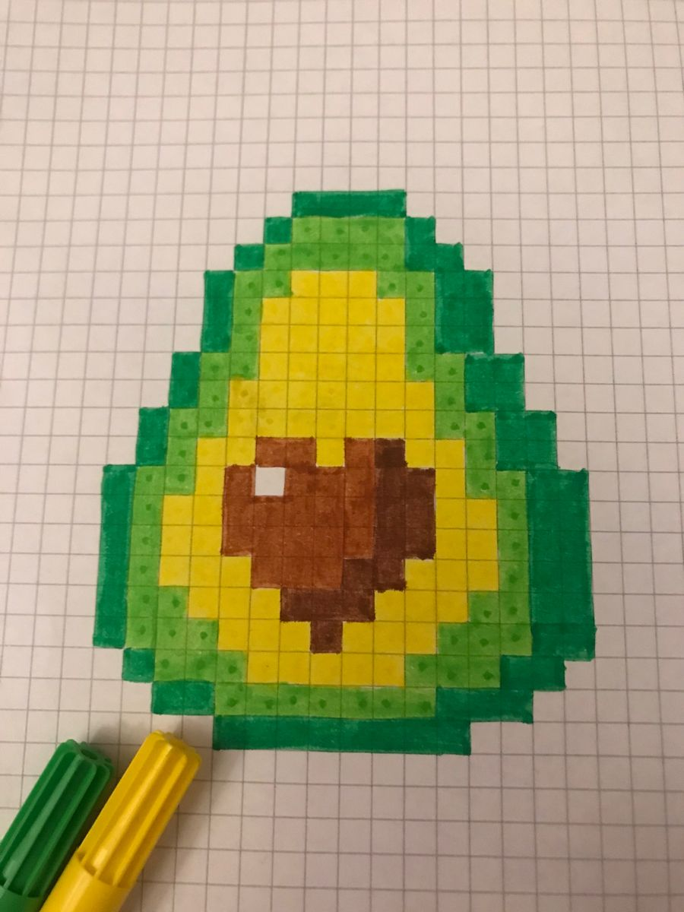

Project 5A
1.1 Implementing the forward process
I implemented the core process of a diffusion model, which incrementally deconstructs an image by adding noise step-by-step, simulating a way to generate new images. As a developer, my goal was to leverage the gradual generation capability of diffusion models, taking an image from pure noise back to a high-quality representation by systematically removing noise. This process essentially acts as an encoding and decoding operation, eventually producing outputs that resemble real images.
To make this work, I needed to introduce a certain amount of noise at each step. The noise coefficients, held in alphas_cumprod, are key parameters in this process. These coefficients control the level of noise added at each time step, thus determining the clarity of the image. Initially, the image is entirely clean, which I refer to as time step t=0. As I progress through each step, increasing the noise coefficient, the image becomes progressively more distorted. By the time we reach the final time step t=T, the image is nearly indistinguishable from pure noise.
In the implementation, I created a forward function, responsible for taking an image and adding noise based on the current time step. Specifically, in each iteration, I use the square root of the noise coefficient to scale the original image, while generating random noise from a standard normal distribution to blend into the image. Each resulting image at time step t is referred to as x_t, and it becomes noisier as t increases. This approach isn’t simply about adding noise; it involves scaling both the image and noise separately to ensure the image retains specific distribution characteristics under noise influence.
In the forward function, I used torch.randn_like to generate the random noise required for each iteration, providing flexibility in the process. This distribution of noise is crucial in training neural networks, as it helps the model better predict the details in a “true” image during denoising. In practice, I ran the forward process at selected time steps (e.g., 250, 500, 750) to see how the noise accumulates in the image over time, observing its gradual transition from a clear state to a nearly pure noise state. This visualization illustrates how the diffusion model progressively breaks down an image, offering a direct view of the model's deconstruction capabilities.

This is the original photo.
1.2 Classical Denoising
I explored a classical approach to denoising using Gaussian blur on noisy images from the previous diffusion steps. Here, the task was to attempt to clean the noise in the images at timesteps [250, 500, 750] using Gaussian filtering. The main challenge with this approach is that, although Gaussian blur can reduce high-frequency noise, it also blurs essential image details, often making it difficult to retrieve a clear image.
For each of the noisy images, I applied Gaussian blur with a kernel size of 5 and a sigma of 1.0, which generally helps in reducing some visible noise while preserving a balance between detail and smoothness. After blurring, I displayed each noisy image next to its denoised counterpart, showing the effect of Gaussian filtering at each timestep.
As expected, the Gaussian blur reduced noise in each image, but it also blurred the main features, especially in high-noise images. This outcome illustrates the limitations of traditional denoising techniques compared to more sophisticated diffusion-based denoising models that can better retain details while reducing noise.
1.3 Implementing One Step Denoising
In this step, I leveraged a pretrained diffusion model to achieve advanced denoising on noisy images generated in the previous sections. This model utilizes a UNet architecture that has been trained extensively on pairs of noisy and clean images, enabling it to predict and remove Gaussian noise effectively. By using the pretrained UNet, we aim to approximate the original image from the noisy inputs at timesteps [250, 500, 750].
The core of this denoising approach involves estimating the noise within the noisy image and then using this estimate to reconstruct an image closer to the original. Unlike simple subtraction, this approach requires scaling the noise estimate correctly. The denoiser takes both the noisy image and the time step as inputs, allowing it to condition the denoising based on the level of noise. Additionally, since the model was trained with text conditioning, I used a text prompt embedding ("a high quality photo") to guide the UNet’s output.
Using the UNet, I input the noisy image along with the timestep and text prompt. The model then outputs a noise estimate, which I can utilize to clean the image.
To get a refined estimate of the original image, I scaled the noise according to specific coefficients associated with each timestep. This process involves dividing the noisy image by the estimated noise at each step, adjusting for each image’s noise level to maximize clarity. This process highlights the power of pretrained diffusion models for image denoising. Unlike classical methods, the UNet is able to preserve critical details within the image, offering significantly better results than traditional Gaussian blurring.
1.4 Implementing Iterative Denoising
In this section, I implemented a process to denoise images iteratively using a diffusion model, allowing us to recover high-quality images even when the initial noise is significant. Unlike a single-step approach, iterative denoising gradually reconstructs the image by removing noise over multiple steps, producing finer details and better image quality, especially for heavily degraded images.
The iterative approach starts from a highly noisy image and refines it through a sequence of denoising steps. At each step, noise is incrementally removed based on specific calculations involving noise scaling coefficients, which balance the levels of signal and noise at each stage. This method essentially interpolates between the noisy image and an estimate of the clean image, preserving more structural details with each pass.
Instead of processing every single timestep, I optimized the denoising by using a reduced set of “strided” timesteps. By starting from a high-noise level and reducing noise in consistent intervals, we reduce computational load without sacrificing quality. The scheduler adjusts the noise levels accordingly for each chosen step, ensuring that each refinement pass contributes effectively to the final output.
In the denoising loop, each image update combines an estimate of the clean image with the current noisy image, weighted by scaling coefficients that depend on the timestep. Additional learned variance is incorporated at each step, simulating natural image noise variations and enhancing realism in the denoised output.
The iterative denoising method outperforms both single-step denoising and Gaussian blurring by retaining finer details. While a one-step approach provides a rough approximation of the original image, iterative denoising leverages the strengths of diffusion models, producing a high-quality, nearly noise-free image with natural details intact. This method demonstrates how diffusion models excel in image reconstruction, especially when handling substantial noise.
1.5 Diffusion Model Sampling
I used the iterative denoising process to generate images from scratch, starting with pure noise. By setting the initial step to zero and passing in random noise, the diffusion model effectively denoises the noise image iteratively, transforming it into a structured, recognizable image. This approach simulates generating a “high-quality photo” based on the given text prompt.
I started with a random noise image, generated with a standard normal distribution. This noise serves as the initial “input,” which will be progressively refined. Using the iterative denoising process, each noisy image is gradually denoised based on the guidance from the text prompt embedding. With each step, the model removes noise and adds structure, leading the noisy input toward a coherent output image. I generated five different images using this approach, each representing an attempt by the diffusion model to interpret and render the text prompt "a high quality photo."
The results showcase the diffusion model's ability to produce reasonable images from random noise. Although these initial outputs may lack high levels of detail, they illustrate the model's capacity to create structured images iteratively. In the following sections, we will explore ways to enhance image quality further.
1.6 Classifier Free Guidance
In this part, I improved image quality for generation by applying **Classifier-Free Guidance (CFG)** to the diffusion model. CFG combines both conditional and unconditional noise estimates, allowing the model to emphasize relevant details for the prompt while still incorporating a touch of randomness. By adjusting the guidance scale \( \gamma \), we can control the influence of the conditional prompt, enhancing image quality at the cost of diversity.
Using CFG, the diffusion model generates two noise estimates at each timestep—one conditioned on the prompt “a high quality photo” and the other using an empty prompt. This allows the model to differentiate between relevant details for the prompt and general noise. The core CFG formula combines these two noise estimates based on a scaling factor \( \gamma \). Setting \( \gamma \) above 1 enhances details by giving more weight to the conditional estimate. In this case, I used \( \gamma = 7 \), which provides a stronger prompt influence, producing more coherent and detailed images.
The CFG process follows similar steps to iterative denoising but integrates the combined noise estimate at each iteration. The model refines the noise progressively, guided by both the prompt and an adjusted degree of randomness, until it produces a structured image. Using CFG, I generated five images with much greater fidelity than the standard iterative denoising method. The resulting images are more defined and aligned with the prompt, although the diversity is somewhat reduced. This technique effectively demonstrates how CFG can improve output quality when generating images from pure noise in diffusion models. The CFG technique significantly enhances image quality by tailoring the denoising process to the prompt’s content. The generated images show greater coherence and align better with the desired prompt, making CFG a powerful tool for controlled image synthesis.
1.7 Image-to-image Translation
In this part, I applied a controlled noise and denoise process to create editable versions of an image. By adding varying levels of noise to an existing image and using the diffusion model with Classifier-Free Guidance (CFG), the model can make gradual, creative edits to the original image, effectively applying the SDEdit algorithm.
I began by running the forward process to add a controlled amount of noise to the original image. The degree of noise added varies across predefined noise levels [1, 3, 5, 7, 10, 20]. A lower noise level keeps the image closer to its original form, while higher levels produce more substantial alterations.
After adding noise, I applied the CFG-based iterative denoising function, beginning at different levels to progressively refine the image. This approach allowed the diffusion model to reconstruct the image step-by-step, retaining some original details while also introducing changes based on the prompt "a high quality photo."
I generated a series of images showing how each noise level influenced the final result. Lower noise steps yielded images close to the original, while higher noise steps allowed for more creative deviation, effectively editing the image. I also applied the same process to two additional images, observing similar progressive changes.
The results demonstrate how the diffusion model, guided by the prompt and adjusted noise levels, can creatively edit images. As noise levels increase, the model "hallucinates" more, introducing unique changes while preserving natural-looking details. This approach is especially useful for subtle to more extensive image modifications, with CFG enhancing the quality and detail of the edits.

This is the original test photo 1.

This is the original test photo 2.
1.7.1 Editing Hand-Drawn and Web Images
In this section, I experimented with projecting non-realistic images onto the natural image manifold using a diffusion model with Classifier-Free Guidance (CFG). This approach allowed me to transform web-sourced and hand-drawn images into more photorealistic versions by progressively denoising them at varying noise levels. The process follows the same iterative denoising approach used in previous sections, providing a unique way to interpret and transform abstract images.
I selected an image from the internet, processed it to fit the diffusion model's input requirements, and converted it to a tensor.Using a drawing interface, I created two hand-drawn sketches. These images were similarly processed to prepare them for the model's iterative denoising function.
For each image, I applied varying noise levels [1, 3, 5, 7, 10, 20]. Lower noise levels preserved more of the original structure, while higher noise levels prompted more dramatic transformations.
Starting from each noise level, I used the CFG-based iterative denoising function with a prompt of "a high quality photo." This iterative process gradually "projected" the abstract images onto the manifold of natural images, creating increasingly realistic transformations with each step.
The web image transformed through denoising steps, gradually shifting from its original form to a more photorealistic interpretation while still reflecting the underlying structure. The sketches progressively morphed into detailed, natural-looking images that retain hints of the original drawings. Each noise level adjustment yielded unique variations, offering insight into how the model interprets and enhances abstract shapes and textures.

This is the original test photo 4.

far view
This is the original hand_written test photo 1.

far view

This is the original hand_written test photo 2.
1.7.2 Inpainting
In this section, I implemented an inpainting function using a diffusion-based approach to fill in specified regions of an image. By following the RePaint methodology, this inpainting process allows for selective modification within a given mask, while preserving the original image's content outside the mask.
A binary mask was created, where regions marked as 1 represent areas to be edited, and 0 indicates areas that should remain unchanged. In this example, I defined a mask on the top portion of the image to edit that section. Starting with random noise, the model gradually denoises the image through a series of iterations. At each iteration, the following steps were performed. The model estimates noise using classifier-free guidance (CFG) to incorporate the prompt. The inpainting-specific step forces pixels outside the mask to match the original image with noise added for the current timestep, while the region inside the mask is adjusted freely by the model to incorporate new content. By retaining the original image's structure outside the mask, the inpainting process selectively edits only the desired region, blending seamlessly with the unedited areas.
I repeated the inpainting process on two additional images with different custom masks, demonstrating the flexibility of the inpainting function. Each edited image displayed the ability of the model to "hallucinate" realistic content within the masked region, while seamlessly blending it with the surrounding unedited areas. This approach highlights the power of diffusion models for localized image editing and content generation, providing precise control over the inpainting process.
1.7.3 Text-Conditioned Image-to-image Translation
In this part, I implemented text-conditioned image-to-image translation using a diffusion model guided by a specific prompt. By setting a text prompt, I was able to influence the inpainting and denoising process, directing the model to not only refine the noisy image but also to incorporate elements suggested by the text.
Instead of using a neutral prompt, I chose "a rocket ship" as the conditioning prompt. This change influenced the denoising model to subtly add features and textures that align with the prompt, giving the output image a new thematic element.
Similar to the previous section, I began with different noise levels [1, 3, 5, 7, 10, 20], adding controlled amounts of noise to the test image. The iterative denoising process with Classifier-Free Guidance (CFG) then refined each image, guided by the "rocket ship" prompt.
I observed the image progressively take on new visual characteristics related to the prompt, particularly at higher noise levels, where the model “hallucinated” more prompt-inspired details.
I applied the same method to two additional test images, following the same steps with varying noise levels. This process showcased the model's ability to creatively adapt different base images to reflect the prompt theme, resulting in unique interpretations based on the initial input image and noise level.
The model demonstrated a fascinating ability to blend the original image with elements suggested by the prompt. With lower noise levels, the images retained more of the original structure with subtle thematic hints. As noise levels increased, the images showed a stronger deviation towards the prompt, blending creative elements inspired by "a rocket ship" into the original content.
1.8 Visual Anagrams
I created **Visual Anagrams** using a diffusion model to produce optical illusions where an image appears as one concept when right-side up and as another when flipped upside down. By averaging the noise estimates of two different prompt-conditioned images, I achieved a blended effect where each prompt influences the image depending on its orientation.
I generated two noise estimates:
- One for the right-side up orientation using the prompt “an oil painting of an old man.”
- The other for the upside-down orientation using the prompt “an oil painting of people around a campfire.”
- For the second noise estimate, the input image was flipped vertically, allowing the model to interpret it as an inverted image with different content. After obtaining the noise estimate, I flipped it back to align with the original image orientation.
After obtaining both noise estimates, I averaged them to create a final noise estimate that blends both prompt influences. This averaged noise estimate was then used in the reverse diffusion step, gradually refining the image with a balance between both prompts. This process showcases the model's remarkable capacity for multi-prompt synthesis, creating optical illusions that are striking in their dual interpretation.
1.10 Hybrid Images
In this section, I implemented **Factorized Diffusion** to create hybrid images using a diffusion model. This technique combines low and high frequencies from two separate prompt-conditioned noise estimates, producing an image that looks like one concept from afar and another up close.
I generated two noise estimates:
- The first noise estimate, conditioned with the prompt “a skull,” captures low frequencies to emphasize the image’s overall shape when viewed from afar.
- The second noise estimate, conditioned with the prompt “a waterfall,” provides high frequencies, capturing intricate details visible up close.
Using a Gaussian blur with a kernel size of 33 and sigma 2, I separated low frequencies from the first noise estimate. isolate high frequencies in the second noise estimate, I subtracted the blurred (low-frequency) component, leaving only the detailed elements. I then combined these two frequency components, forming a final noise estimate that blends both prompt influences.
This combined noise estimate was used in the diffusion process, gradually refining the image with both high and low-frequency information. As a result, the image appears differently based on viewing distance—illustrating one concept up close and another from afar.

far view